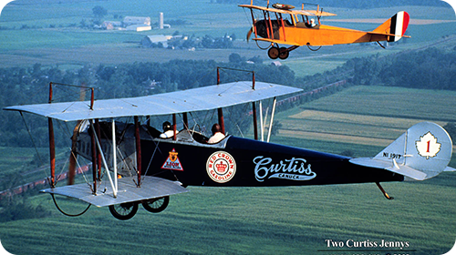
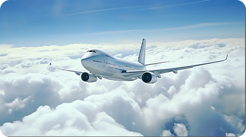

Самолёты — это аппараты тяжелее воздуха, которые создают подъёмную силу за счёт набегающего на крыло воздушного потока. В настоящее время самолёты используются для перевозки пассажиров и грузов, а также в военных целях. Первые самолёты появились в конце XIX века. Они были легче воздуха и перемещались по воле ветра. В 1783 году Жан-Франсуа Пилатр де Розье и маркиз д’Арланд совершили первый полёт на воздушном шаре, разработанном братьями Монгольфье. В XIX веке учёные сосредоточились на создании управляемых воздушных шаров, или дирижаблей. В 1852 году француз Жиффар совершил первый полёт на дирижабле с паровым двигателем. Дирижабли использовались для транспортного сообщения и в военных целях.

В начале XX века братья Райт создали первый самолёт, который совершил успешный полёт 17 декабря 1903 года. Самолёты начали активно развиваться и использоваться в военных целях. Во время Первой мировой войны произошёл переход от дирижаблей к самолётам. В 1930-х годах появились первые реактивные двигатели, которые значительно улучшили скорость и манёвренность самолётов. Это открыло новые возможности для развития авиации. Сегодня самолёты продолжают развиваться и совершенствоваться. Они становятся всё более экономичными, экологичными и безопасными.
